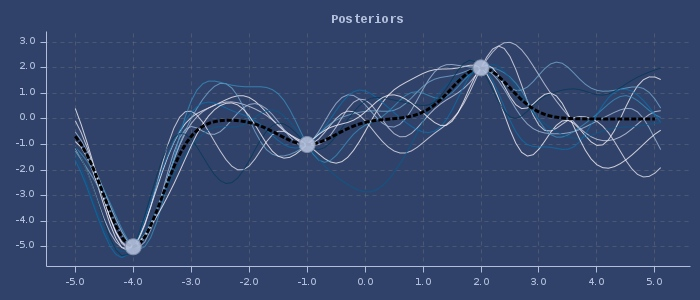
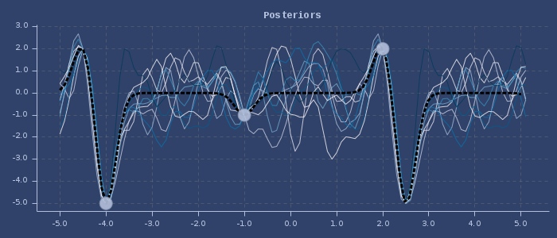
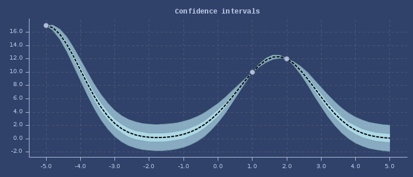
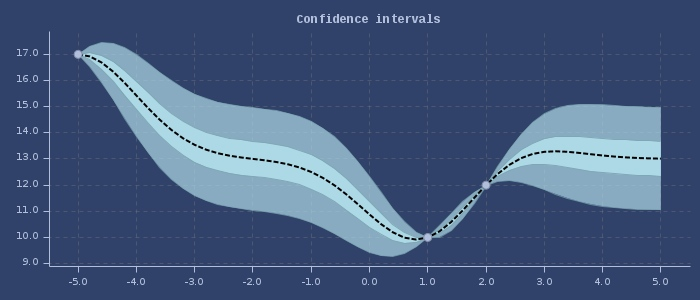
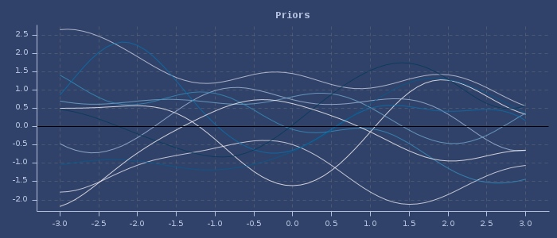
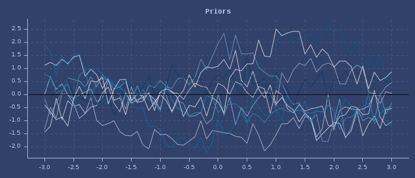
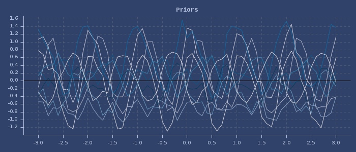

fastmath.gp
Gaussian Processes
See more here
Categories
Other vars: ->GaussianProcess gaussian-process posterior-samples predict predict-all prior-samples
gaussian-process
(gaussian-process xss ys)(gaussian-process xss ys {:keys [kscale kernel noise normalize?], :or {kscale 1.0, kernel (k/kernel :gaussian 1.0), normalize? false}})Examples
Object creation
(gaussian-process [1 2 3] [-1 2 1])
;;=> fastmath.gp.GaussianProcess@79bf99f1
(gaussian-process [1 2 3]
[-1 2 1]
{:normalize? true,
:kernel (k/kernel :gaussian 0.5),
:kscale 2.0,
:noise 0.1})
;;=> fastmath.gp.GaussianProcess@76dc2ed1posterior-samples
(posterior-samples gp-object xvals)(posterior-samples gp-object xvals stddev?)Examples
With gaussian kernel
(let [gp (gaussian-process [-5 1 2]
[17 10 12]
{:kernel (k/kernel :gaussian 0.5)})]
(posterior-samples gp (range -5 2 0.9)))
;;=> (17.002400831683303
;;=> 3.1327244738152
;;=> 0.31305956762105946
;;=> 0.2987399114576481
;;=> 1.0083645059278834
;;=> 0.8866669561287589
;;=> 5.040585457436929
;;=> 11.0453928783239)Plot of 10 posteriors (with gaussian kernel)
With periodic kernel
(let [gp (gaussian-process [-5 1 2]
[17 10 12]
{:kernel (k/kernel :periodic 0.2 6.5)})]
(posterior-samples gp (range -5 2 0.9)))
;;=> (16.998262144012358
;;=> 3.550207072166398
;;=> 1.3740815757042117
;;=> -0.30041356700574995
;;=> 1.132509442646843
;;=> 1.2990426110115583
;;=> 1.9957299797772192
;;=> 11.731340570021707)Plot of 10 posteriors (with periodic kernel)
predict
(predict gp-object xval)(predict gp-object xval stddev?)Examples
Usage
(let [gp (gaussian-process [-5 1 2] [17 10 12])]
[(gp 1.1) (predict gp 1.1)])
;;=> [10.546022386437869 10.546022386437869]Predict and return standard deviation
(let [gp (gaussian-process [-5 1 2] [17 10 12])]
[(gp 1.1 true) (predict gp 1.1 true)])
;;=> [[10.546022386437869 0.059815559254009394]
;;=> [10.546022386437869 0.059815559254009394]]Gaussian process with confidence intervals
Predict and return standard deviation for normalized process
(let [gp (gaussian-process [-5 1 2] [17 10 12] {:normalize? true})]
[(gp 1.1 true) (predict gp 1.1 true)])
;;=> [[10.097261189253015 0.059815559254009394]
;;=> [10.097261189253015 0.059815559254009394]]Gaussian process with confidence intervals for normalized process
predict-all
(predict-all gp-object xvals)(predict-all gp-object xvals stddev?)Examples
Usage
(let [gp (gaussian-process [-5 1 2] [17 10 12])]
(predict-all gp [-5 -2 1 2 3]))
;;=> (16.999983000017068
;;=> 0.2398327096180954
;;=> 9.99999569443965
;;=> 11.999990611463748
;;=> 6.277129316169497)Predict and return standard deviation
(let [gp (gaussian-process [-5 1 2] [17 10 12])]
(predict-all gp [-5 -2 1 2 3] true))
;;=> ([16.999983000017068 9.999995000253138E-4]
;;=> [0.2398327096180954 0.9998441542754742]
;;=> [9.99999569443965 9.999992089246487E-4]
;;=> [11.999990611463748 9.999992089246487E-4]
;;=> [6.277129316169497 0.73930586879199])prior-samples
(prior-samples gp-object xvals)Examples
Usage
(let [gp (gaussian-process [0 1 -2 -2.001] [-2 3 0.5 -0.6])]
(prior-samples gp (range 0 1 0.1)))
;;=> (0.6029823371303533
;;=> 0.6094691527665922
;;=> 0.6077642094051463
;;=> 0.6066551622518532
;;=> 0.6069811489727531
;;=> 0.6159049926163374
;;=> 0.6411156518570941
;;=> 0.684492568787482
;;=> 0.7421011696137875
;;=> 0.8154899919072929
;;=> 0.9093599013056791)Plot of 10 priors
With added noise
(let [gp
(gaussian-process [0 1 -2 -2.001] [-2 3 0.5 -0.6] {:noise 0.1})]
(prior-samples gp (range 0 1 0.1)))
;;=> (-0.8718355474034911
;;=> -0.55522979493864
;;=> -1.1921672568727781
;;=> -0.37522196373511696
;;=> -1.3981637724363587
;;=> -0.8414133692451061
;;=> -0.7857550454255021
;;=> -0.5472464859361497
;;=> -0.47484157983821695
;;=> -0.7103692144198858
;;=> 0.04102177070428514)Plot of 10 priors (with noise)
With periodic kernel
(let [gp (gaussian-process [0 1 -2 -2.001]
[-2 3 0.5 -0.6]
{:noise 0.01,
:kernel (k/kernel :periodic 2)})]
(prior-samples gp (range 0 1 0.1)))
;;=> (0.7863150312646653
;;=> 0.8805421926445807
;;=> 1.0353851899915467
;;=> 0.8498230973251966
;;=> 0.4082870283989229
;;=> 0.5742205698449689
;;=> 1.0606429176742036
;;=> 1.0470120118720132
;;=> 0.8287757424394636
;;=> 0.8610436152995429
;;=> 0.7557363239988598)Plot of 10 priors (with periodic kernel)